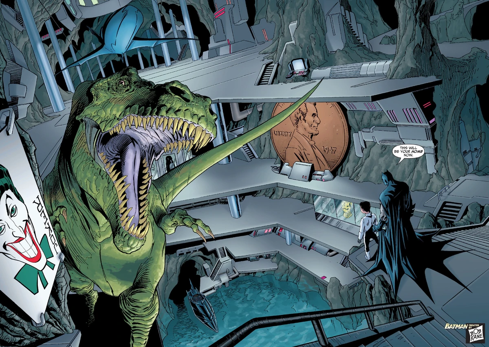
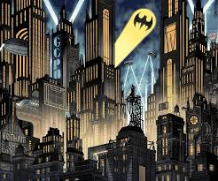

Extras
Here are a few other details that could not fit into the other pages.
Bases of Operation
The Batcave

The primary base of operations for Batman.
The Batcave contains the Batcomputer, Batmobile, Batsuit and other tools used in his battle against crime.
Gotham City

Gotham City is Batman's primary area of operation.
Batman regularly patrols and protects the city. Commissioner Gordon and the Gotham City Police Department use the Bat-Signal to request his assistance.
Organizations
Wayne Enterprises

Wayne Enterprises was originally used to support Batman's activities.
The organization later became an important part of Bruce Wayne's philanthropic work, supporting technological innovation and helping the citizens of Gotham City.
The Outsiders

The Outsiders are a group of superheroes created by Batman.
The team operates independently, allowing its members to respond to threats without directly involving the Justice League.
Affiliations
Justice League

The Justice League is a group of superheroes formed to protect the world against catastrophic threats.
Batman is one of its original members, alongside Superman, Wonder Woman, The Flash, Green Lantern, Aquaman and Martian Manhunter.
Bat-Family

The Bat-Family consists of Batman's closest friends, family members and trusted allies.
The group includes his adopted children, members of the Gordon and Fox families, and his trusted butler and father figure, Alfred Pennyworth.